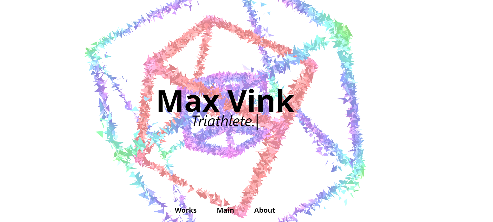
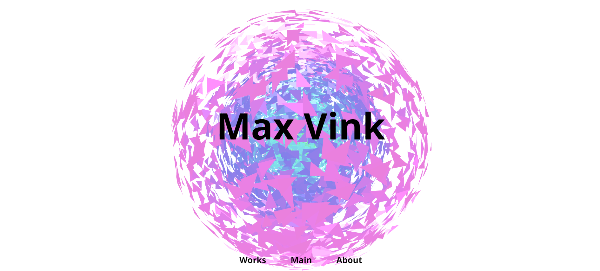
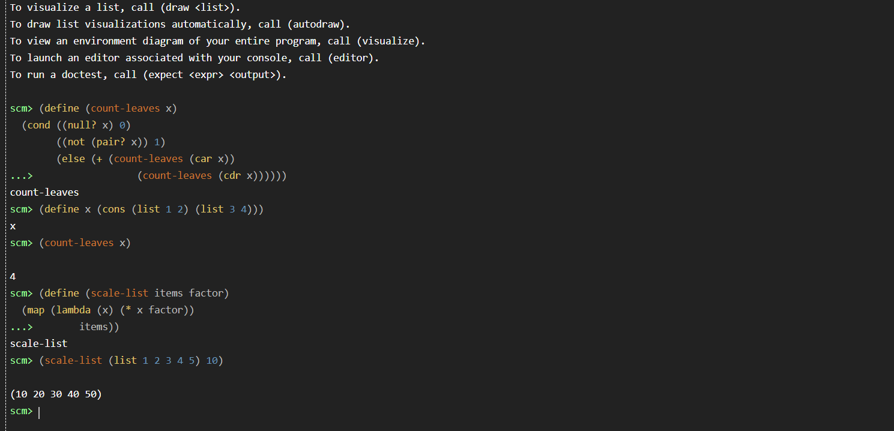
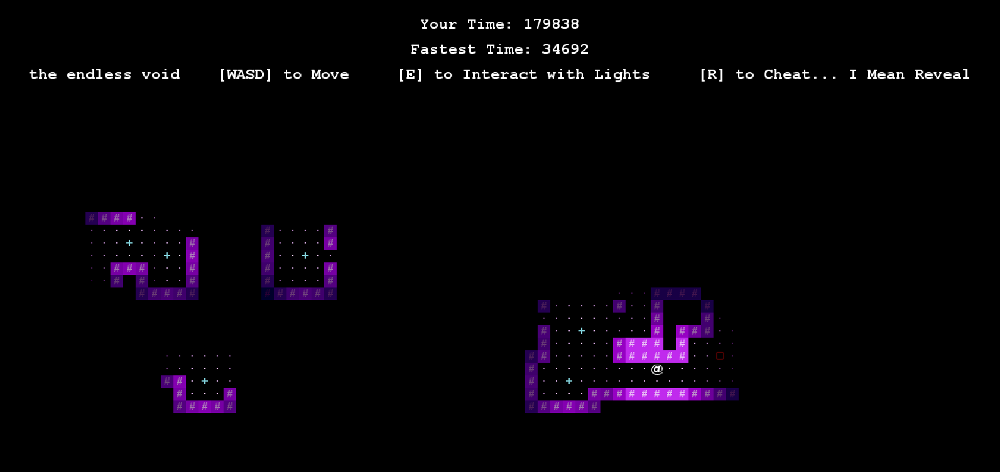
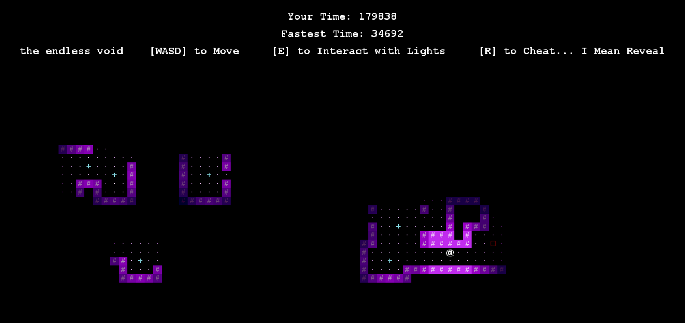

❮



❯
Max Vink, The Website
December 2022
I finally redid my website! Though version one was interesting and fun, it lacked the sophistication and
intricacy that comes with an expanded command of JavaScript, and moreover, was structurally limited by the
ignorance inheret in a beginner's knowledge at the outset of my venture into HTML and CSS.
Working with Three.JS experimentementally and as a founding member of Berkeley's Google Student Developer
Club, along with being inspired by some of the amazing constructions I've seen online, I realized
the potential it had to become the centerpiece of an updated, upgraded site. 10,000 choreographed triangles
make quite the visual spectacle.
The main visual is built with WebGL via Three.JS. However, I didn't use the BoxGeometry module in the API,
and instead added the vertices myself via a custom object derived from the InstancedBufferGeometry,
allowing me to transform the vertices individually.
Because I sought to manipulate units of disjointed triangles, I built voxels. The main animation is built programmatically,
instead of via 3D modeling, allowing seamless transitions between the parallelepiped and the other animations.
After that, I move vertices in units of indices, move indices in units of triangles, and move triangles in units
of solids. The positions, velocities, colors, and sizes of these units are acheived by mathematically manipulating
vectors sequentially (unfortunately, this means an unfortunate side effect is that the speed of the animation is contingent
on a user's graphics card. It's very fast on the new Apple M2 chips).
All vertex coordinate calculations are done within shaders. This is a technique called GPGPU.
As for how GPGPU controls transforms, all animation patterns are written in the vertex shader.
Instead of writing a bunch of animation methods inside the object, I transform vertices matrices by manipulating
vectors, which significantly reduces processing time, allowing me to add thousands of triangles to the animation
without exploding a viewer's computer.
The animationParam coefficients, an attribute I built in to the object created in Triangles.js,
determines which animations to apply. When set to zero, an animation cannot be triggered.
Only when an animation parameter is set to one is that animation pattern applied.
Because the animationParam is set instantly across all triangles,
but processing those triangles happens sequentially inside the vertex shader,
the resulting switch from one pattern to another, drawn out a few extra seconds by creating intermediary
frames via Tween.JS,
allows seamless transitions between the two animation patterns and have an additional visual appeal.
The RBG color transition is also quite interesting. Instead of writing an algorithm in the fragment shader, I
built it in to the vertex shader to save memory. To change colors,
I applied trig functions to noise values multiplied by coefficients activated
by animation parameters, then multiply those by their own position. These values output an HSV-described
color, which is prefered
over RBG because I can (1) achieve the full spectrum of colors and (2) avoid black and white.
I then applied those values to an HSV to RGB algorithm that transforms the
HSV vector into an RGB vector and maps the return value an essentially normalized vector. Then, triangle
colors are simply incremented by that value.
In the end, voila: a mesmerizing canvas of dancing triangles.
HTML
CSS
JavaScript
Three.JS
WebGL
GLSL
GSAP (TweenMax)
[See on Github]
CS61b World Engine
November 2022
For the class final in CS61b, we were required to demonstrate our understanding of software engineering
principles by creating a video game. What data structures will you choose? What algorithms will you employ?
How will you organize your classes and methods? How will you test your project to verify that it functions
properly, even despite odd edge cases?
I engineered an 2D tile-based world engine that generates an interactive labyrinth world in Java. World
generation is predicated on Randoms derived from seeds, so the world is psuedorandom -- able to be regenerated with the
same seeds. First, centers are randomly placed. Rooms are built around these centers in random sizes. Then, a Weighted
Quick Union algorithm connects all the rooms, ensuring that all are navigable and connected.
Beyond the main menu and basic world layout, I decided to go further than the project spec,
adding some polish and intrigue to the game. I programmed persistence via save files,
dynamic lighting predicated on line of sight vision, scoring and high scores, a way to win, interactive
light sources, and a dynamic HUD.
Line of sight vision is predicated on a Breadth First Search algorithm that only grants vision on seeable
paths. In other
words, light sources do not give vision around corners. Victory is contingent on lighting up all the rooms
in the shortest
period of time, making the game a speedrun. I think it's little touches like this that make a world of
difference to users. Despite being easier to construct than an engine, they are the features that matter the
most to a
player and provide the interest that foments immersion.
Recidivism Behavioral Machine Learning Model
November 2022
As a researcher and developer in Political Computer Science @ Berkeley and someone who cares deeply about
fairness,
I learned about an ML model used in our criminal justice system that attempts to predict recidivism, the
likelihood
of commiting another crime after a release from prison, called COMPAS.
This model is used to set bail, parole, and sentences, and includes race as one of the primary factors it
considers.
Beyond that, the model is only 66% accurate, which is abysmal given that it is used to shape a defendant's
life, and moreover,
is only 40% accurate when predicting innocence / no risk. Worse still, COMPAS refuses to show the inner
workings of their model,
making the judicial system also a black box via its implementation. See the presentation for all the awful
weaknesses.
Is it possible to build a more accurate model that does not include race? I decided to find out.
At the end of the semester, I presented the model and my findings at a symposium on campus.
My most accurate model was built on XGBoost, with 75% validation accuracy. However, given that it is
relatively hard
to explain to a layperson on a jury or on a bench, I reccomended an alternative as well.
A three-factored logistic regression model acheives 70% cross-validation accuracy, which is still better
than the industry standard,
but also accessible to a jury.
Python
Numpy
Pandas
Machine Learning
[See the Presentation]

Scheme Interpreter
August 2022
In CS61A, we were required to demonstrate our ability to understand and write algorithms
by creating a Scheme interpreter. Do people still use Scheme? Minor details.
I designed an interpreter that prompts users for scheme code, then parses that user generated code,
tokenizes it by white space,
and then evaluates it by recusively calling eval and apply code with Python.
Beyond this basic functionality that achieves the minimum requirements to call something an interpreter,
I went futher,
optimizing the interpreter to handle some of the unique architectural advantages of Scheme, including
visually appearance and
tail recursion optimization.
Whereas Python saves each environment that a recursive method is called within, even if no recombination
follows, thereby potentially
inducing major memory consumption, Scheme is designed such that recursive calls that lack a
recombination step simply override the
current environment, effectively utilizing storage.
How does one use a language without tail recursion optimiztion to support that very feature in one that
does? Ironically, with iteration.
By iteratively calling evaluation and application methods within a while loop, instead of recusively
calling them as was suggested
by course staff, it was possible to achieve this functionality.
 
